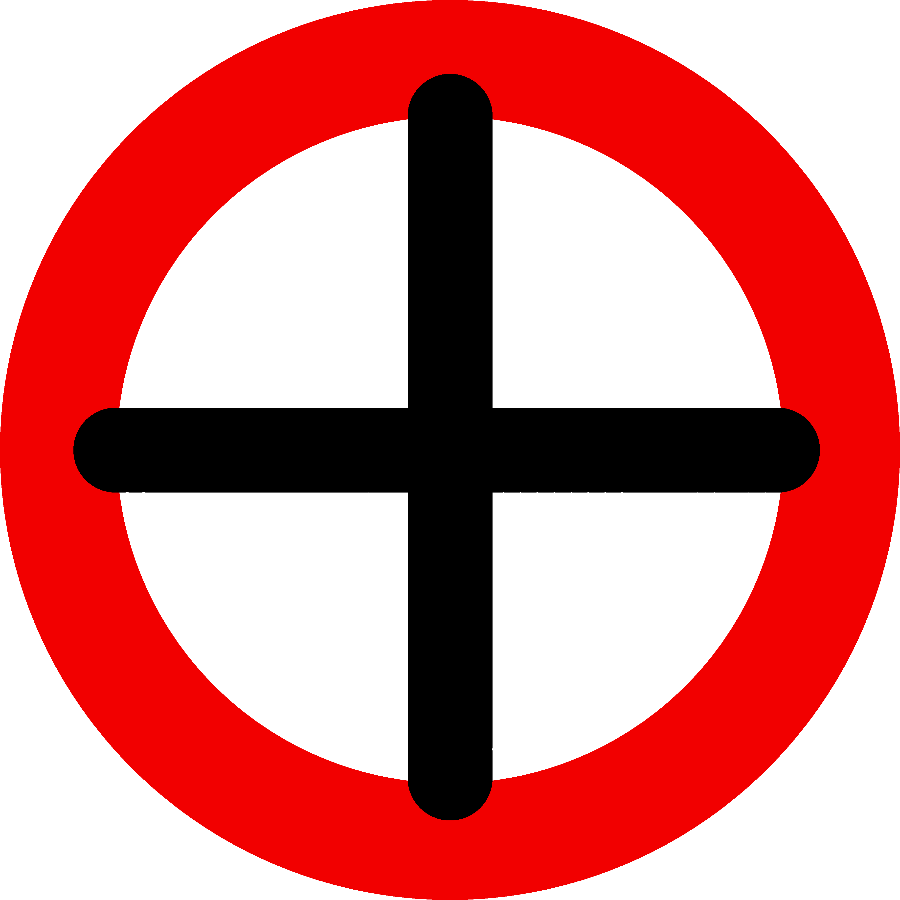

|  | 0 Intro |
✔ |
|---|
Social Mutualism is a leftist libertarian ideology that advocates for:
- More government transparency, (less government regulation) and simplifying hierarchical structures.
- More local decision-making and decentralization with more direct democracy. (state laws)
- Socialist goals can be achieved via workplace reforms, participatory democracy and more freedoms from the state.
- Give everyone shelter, food, healthcare and education, if you want more/better you work. UBI 'nuf said.
- Let workers vote on business matters via workplace democracy.
Social Mutualism is influenced by:
Mutualism, Pirate Politics, Experimentalism, Gradualism,
Participatory democracy, Welfarism, Labor rights, Libertarian Socialism, Vikiism.
0.1 What should we do? |
✔ |
|---|
1. UBI.
2. push for more government transparency.
3. start using alternative voting methods (ranking or grading). (more info at plato.stanford.edu)
3.1 call for the government to take citizens' initiatives more seriously.
4. scale down the government and justice system.
4.1 start from easiest: UBI, drug laws.
4.2 then onto more harder stuff: IP-laws, patents, direct/liquid democracy.
5. let people allocate (part of) where their taxes go?